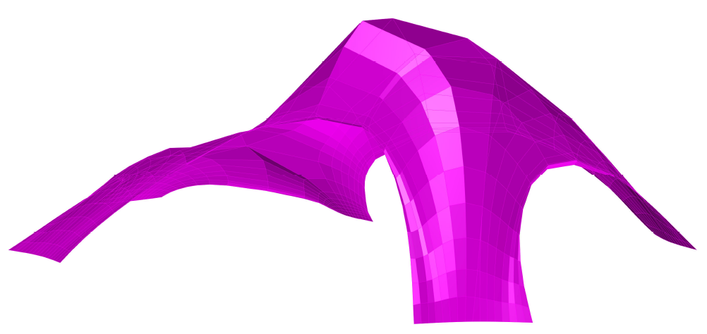
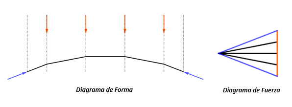
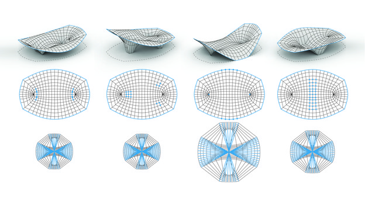
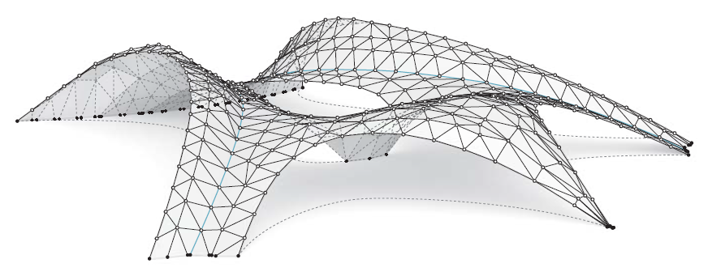
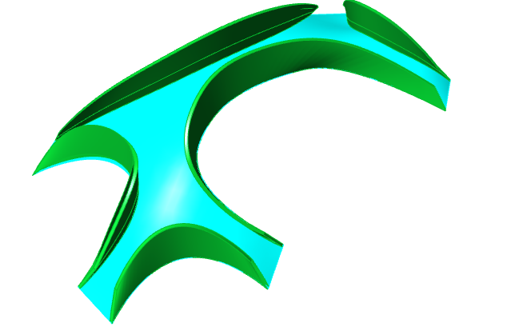
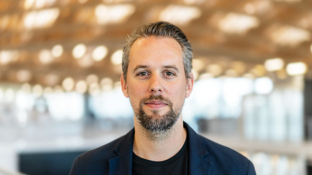
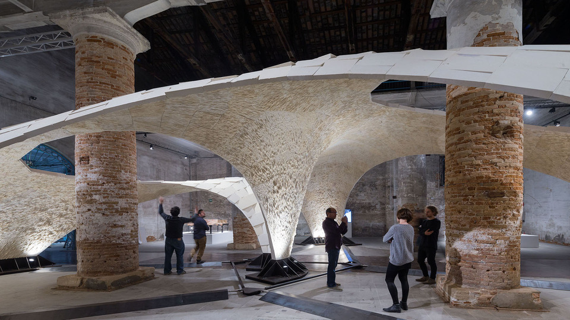
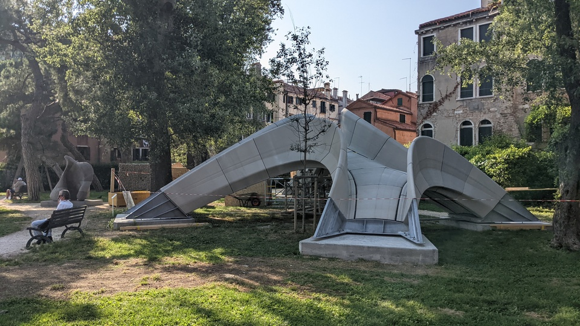
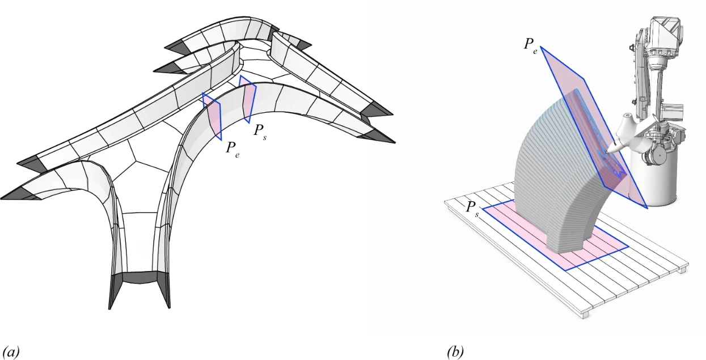
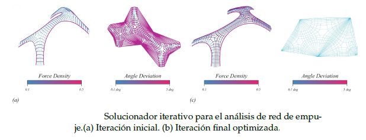

Bienvenidos a este blog sobre estática gráfica, una rama de la ingeniería que estudia las estructuras en equilibrio, analizando las fuerzas que actúan sobre ellas mediante dos diagramas principales, el de forma y el de fuerza.
En este espacio, nos enfocaremos en dos técnicas particulares: la metodología de la parábola en ejemplos 2D y la metodología de Thrust Network Analysis en ejemplos 3D.


Este blog comenzará abordando los principios teóricos utilizados durante la primera época, relacionados con el diagrama de forma y fuerza!

Aquí podrás ver la trayectoria de esta técnica, pasando por los inicios hasta llegar a las técnicas más disruptivas utilizadas hoy en día!

Podrás profundizar en los aspectos matemáticos que hay detrás de dicha teoría, y verás la capacidad para generar estructuras asombrosas!

Gracias a Block Research Group, se ha llevado a cabo proyectos mediante la teoría del Thrust Network Analysis como el Puente Striatus.
Evolución de la Estática Gráfica
La construcción de estructuras de fábrica se basan principalmente en el uso de
ladrillo y piedra para cubrir grandes luces, cuya forma queda determinada a trabajar
únicamente a compresión.
A mediados del siglo XVII, hubó un punto de inflexión a la hora de entender el
comportamiento de dichas estructuras y la relación que mantenían con formas en
arco.
En 1676, Robert Hooke (1635-1703) publicó su trabajo sobre modelos colgantes (hanging
models), dónde afirmó que: As hangs a flexible cable so, inverted, stand the touching
pieces of an. Con ello Hooke quería reflejar que, al utilizar cables sometidos a la
gravedad y sujetados por ambos extremos, definían una curva cóncava, invirtiendo
dicha figura, explicaba el equilibrio al que estaba sujeto los arcos funiculares de estructuras
de fábrica.
Una de las aplicaciones más relevantes de dicha teoría formulada por Hooke fue llevada
a cabo por Giovani Poleni (1683-1761) en el análisis de la cúpula de San Pedro
en Roma.
En 1864, Karl Culmann (1821-1881), profesor de Ingeniería Civil en el Instituto
Federal de Tecnología de Suiza (ETH), en Zúrich, publicó la primera parte de su libro
"Die graphische Statik".
Para ello, se basó en trabajos anteriores relacionados con enfoques gráficos para la
forma y la fuerza realizados por científicos como Simon Stevin (1548-1620), Pierre de
Varignon (1654-1722), Luigi Cremona (1830-1903) y James C. Maxwell (1831-1879).
Gracias a ellos, Culmann adaptó y aplicó sistemáticamente estos métodos a problemas
de estática. Esta metodología se basa en el uso de dos diagramas:
- Diagrama de Forma: representa la geometría de las barras articuladas de la
estructura.
- Diagrama de Fuerza: relacionado con el polígono de fuerzas, que estará compuesto
por los esfuerzos de los elementos y condiciones de contorno. El diagrama
se subdivide en dos polígonos:
- El polígono externo del diagrama de fuerza (Curvas Naranjas y Azules)
hace referencia a las condiciones de contorno asociado al diagrama de
forma (Cargas y Reacciones).
- La configuración interna del diagrama de fuerza (Curvas negras) corresponde
a la forma de la estructura.
Cabe destacar que la relación entre ambos diagramas se define como ”recproco”,
estableciendo las siguientes condiciones:
- Ambos diagramas tienen el mismo número de contornos.
- Cada contorno e en el Diagrama de forma tiene su correspondiente contorno
e* que es paralelo en su Diagrama de Fuerza.
- La longitud del contorno e*, representa el esfuerzo asociado al contorno e, mediante
una escala establecida entre Longitud y Fuerza.
La manipulación de las diferentes condiciones de contorno, permite explorar diversos
diseños que brindan de forma inmediata la relación de las fuerzas internas y
externas de una estructura.
Además, la visualización de las fuerzas en magnitud y dirección es extremadamente
útil para tomar decisiones de diseño vinculadas con el comportamiento estructural.
No es sorprendente que muchos ingenieros y arquitectos hacia finales del siglo
XIX y principios del siglo XX utilizaran ampliamente la estática gráfica para el diseño
y análisis de sus obras. Gustave Eiffel (1832-1923) o Antonio Gaudí (1852-1926),
utilizaron dicha técnica primordialmente en la fase de diseño de sus obras.
Hasta el desarrollo de los métodos numéricos para el análisis estructural a mediado
del siglo XX, la estática gráfica fue una herramienta muy utilizada dentro del
ámbito de diseño estructural, utilizada por ingenieros como Pier Luigi Nervi
(1891-1979) o Robert Maillart (1872-1940).
En la historia reciente varios han sido los arquitectos que han empleado técnicas
relacionadas con las formas funiculares para buscar geometrías óptimas de estructuras
abovedas, como Frei Otto (1925-2015) y sus modelos de pompas de jabón, o Félix
Candela (1910-1997) y sus estructuras basadas en paraboloides hipérbolicos.
Esta metodología fue relevada por las nuevas corrientes de cálculo computacional
(cálculo matricial, elementos finitos...), principalmente tanto por la cantidad de
tiempo que se invertía para realizar estructuras complejas como la complejidad de
implementarse en estructuras 3D.
Thrust Network Analysis
Gracias a los profesores W. Zalewski (1917-2016) y E. Allen (1939-2020) del Instituto
Tecnológico de Massachusets (Massachusets Institute of Technology), autores de Shaping
Structures Statics y Form and Forces: Designing Efficient, Expressive Structures, impulsaron
el estudio de la estática gráfica en la actualidad para el desarrollo de programas interactivos de
cálculo a tiempo real utilizando la estática gráfica, dando lugar a la nueva disciplina
llamada estática gráfica computacional.
El Grupo de Investigación de Block (BRG) del Instituto de Tecnología en Arquitectura
de ETH Zürich, ha sido el sucesor principal de dicha teoría.
Liderado por Phillipe Block, se ha enfocado principalmente
en desarrollar algoritmos y herramientas eficientes asociados al análisis y diseño estructural
para dar un enfoque disruptivo. Phillipe Block desarrolló la teoría de Thrust Network Analysis (2009), dónde se
adoptan las mismas ventajas de la estática gráfica ofreciendo una extensión
viable en 3D.
 Numerosos ejemplos han sido desarrollados gracias a dicha técnica. Se destaca el proyecto llamado Armadillo Vault, Venecia 2016. Compuesto por 399 piezas de piedra caliza cortadas individualmente, sin refuerzo y ensambladas sin mortero, abarca 16 metros con un grosor mínimo de solo 5 cm. Su geometría funicular le permite mantenerse en pura compresión. Partiendo de los mismos principios estructurales y constructivos que las históricas catedrales de piedra, esta forma sofisticada surgió a partir del TNA.
Proyectos de Innovación con TNA
Striatus es un puente peatonal arqueado de albañilería sin refuerzo, compuesto por bloques de hormigón impresos en 3D y ensamblados sin mortero. Exhibido en los Giardini della Marinaressa durante la Bienal de Arquitectura de Venecia hasta noviembre de 2021, este puente de 16x12 metros es el primero de su tipo, combinando técnicas tradicionales de maestros constructores con diseño computacional avanzado, ingeniería y tecnologías de fabricación robótica.
Proponiendo un nuevo lenguaje para el hormigón que sea consciente de la fabricación, responsable desde el punto de vista ecológico y se coloque con precisión para construir más con menos, Striatus optimiza las propiedades interrelacionadas de las estructuras de albañilería, la impresión de hormigón en 3D y el diseño contemporáneo; presentando una alternativa a la construcción tradicional de hormigón.
Block Research Group empleó el Thrust Network Analysis para imponer restricciones de esfuerzos para minimizar los asociados a tracción y modelar diferentes geometrías obteniendo condiciones de compresión pura.